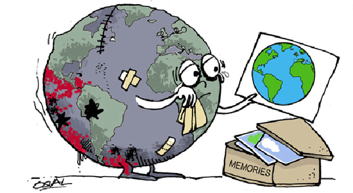

|
ENVIVALION |
|
|
ENVIVALION |
La explotación de los recursos naturales refiere a las actividades de extracción y procesamiento de la materia prima disponible en la naturaleza por parte del ser humano, con fines de obtención de energía y de manufacturación de insumos industriales o de productos elaborados de consumo.
Desde los frutos recogidos y los animales cazados para alimentarse, o la madera cortada y la piedra minada para fabricar casas y herramientas, hasta la materia prima de los complejos procesos industriales, energéticos, petroleros y manufactureros de los que es capaz la industria moderna, la humanidad ha tomado siempre ventaja a los recursos naturales de su entorno para hacerse la vida más fácil y mejor. Y eso es la explotación de los recursos naturales.
La operación de los rellenos sanitarios debe estar respaldada por una documentación específica y seguir distintas normas que regulen tanto al personal que labora en el lugar, como aquel encargado de recolectar la basura, así como otros factores que derivan del espacio.
Algunos ejemplos de explotación de recursos naturales son:
Explotación petrolera: El petróleo es uno de los recursos más valiosos de todos los tiempos, del cual derivan numerosos insumos para diversas industrias humanas y además distintos combustibles hidrocarbúricos. El petróleo es no renovable y se obtiene de depósitos milenarios de materia orgánica en el subsuelo, que tras siglos de presión y temperatura se convierten en una masa fósil homogénea.
Explotación de madera: La tala de árboles para aprovechar su madera es también una industria importante a nivel mundial, ya que la madera se emplea como materia prima en la fabricación de muebles, juguetes, herramientas, adornos, etc. Y la pulpa se emplea también en la producción de papel.
Pesca comercial: La explotación pesquera puede ser de varios tipos: costera y artesanal, masiva y de arrastre, o específica, como lo fue la caza de ballenas durante principios del siglo XX. Del modo que sea, se trata de extraer la vida del océano para generar alimento y otros insumos comerciales.
Energía atómica: La producción de electricidad mediante explosiones nucleares controladas requiere de insumos muy particulares, como son isótopos de Uranio o de Hidrógeno, algunos de los cuales pueden extraerse del subsuelo, y otros pueden fabricarse en laboratorio a partir de, a su vez, otros insumos minerales.
|
Consecuencias de la sobreexplotación Se llama sobreexplotación a la explotación desmedida o sin control de los recursos naturales, sobre todo de aquellos no renovables o sólo parcialmente renovables. Las consecuencias de esta actividad descontrolada suelen ser el agotamiento de los recursos, la destrucción ambiental, la contaminación y las crisis económicas que se generan. |
 |
Leer más sobre:
|
Vida Más Verde |
Contaminación |
Cambio Climático |